| 徐凤年 | 老黄 | 温华 | 姜泥 | 李淳罡 | |
|---|---|---|---|---|---|
| variant 1 |
徐凤年 · variant 1
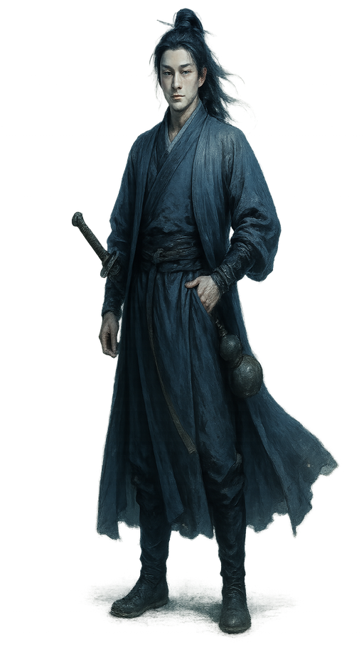 descriptionJade-fair oval face, clear bright eyes, straight brows, youthful yet world-weary, lazy smile. Slender young man with a straight blade-like back, black hair tied high with a white jade hairpin, muted blue scholar's robe with dark embroidered cuffs, curved saber at the waist, wine gourd hanging low, one hand hooked in belt, rakish noble ease final promptSemi-realistic Chinese wuxia character digital painting with cool cinematic mood, moonlit cinematic lighting with silver-blue key light and teal-blue shadows, neutral-cool color grading and desaturated palette, steel-gray ambient light with soft cyan rim, detailed fabric textures with believable cloth weight and painterly brushwork, impasto-style sculpted folds and armor/leather rendering, rich deep palette that stays firmly cool in temperature (blue, teal, slate, silver, indigo dominant), clean bright key light on the figure against pure white background, realistic adult human proportions and anatomy, elegant full-body figure with tangible physical presence, restrained composition with generous negative space, transparent background, no background scenery, clean blank backdrop, clean and focused single-character composition CRITICAL REQUIREMENT: The image must be completely free of any text, letters, words, characters, writing systems, calligraphy, seals, stamps, chop marks, red seal marks, watermarks, signatures, inscriptions, or labels of any kind anywhere in the image. The image should contain ONLY the visual subject with no decorative text elements. Subject: Full-body jianghu wuxia character portrait rendered in cool cinematic painterly style — Jade-fair oval face, clear bright eyes, straight brows, youthful yet world-weary, lazy smile. Slender young man with a straight blade-like back, black hair tied high with a white jade hairpin, muted blue scholar's robe with dark embroidered cuffs, curved saber at the waist, wine gourd hanging low, one hand hooked in belt, rakish noble ease. The character stands in a poised, story-driven martial arts pose with tangible weight and grounded footing, full body from head to feet clearly visible. Costume, hairstyle, accessories, and weapons must faithfully follow the character description. Lighting is firmly COOL: moonlit silver-blue key light from above, soft cyan rim light on the silhouette, teal-blue shadow tones, neutral-cool midtones; absolutely no warm light, no sunset glow, no golden hour, no firelight — even on skin and fabric, shadows must fall cool-blue not warm-brown. Painterly brush strokes sculpt fabric folds and armor/leather details with impasto weight; costume colors stay in the cool-to-neutral range (blue, teal, slate, charcoal, silver, indigo, jade, steel) with clean accent hues; skin rendered with cool-neutral undertones (no orange/tan cast). Clean neutral rim light defining silhouette against pure white background. Transparent background, nothing else behind the character, clean blank negative space only. Vertical composition, character centered with elegant negative space. DO NOT include: no chibi, no Q-version, no oversized head, no photorealism portrait photo, no photo reference look, no western fantasy style, no 3D render, no oil painting, no complex background, no multiple characters, no extra arms, no extra fingers, no cropped feet, no distorted anatomy, no yellow, no yellow tint, no yellow cast, no warm cast, no warm color cast, no warm lighting, no warm palette, no golden hour, no golden lighting, no sunset lighting, no sunset palette, no sepia, no sepia tone, no ochre, no amber, no amber light, no firelight, no torch light, no candlelight, no dusk lighting, no campfire glow, no earth-tone dominance, no ochre-dominant palette, no brown-dominant palette, no tan skin cast, no orange skin, no orange tint, no warm skin lighting, no aged paper, no ivory background, no cream background, no paper texture, no rice paper look, no classical Chinese painting yellowing, no gongbi-on-silk look, no flat shading, no cel-shading, no anime flat look, no muddy dark palette, no dim gloomy lighting, no heavy grunge, no torn canvas, no dust haze, no dusty atmosphere |
老黄 · variant 1
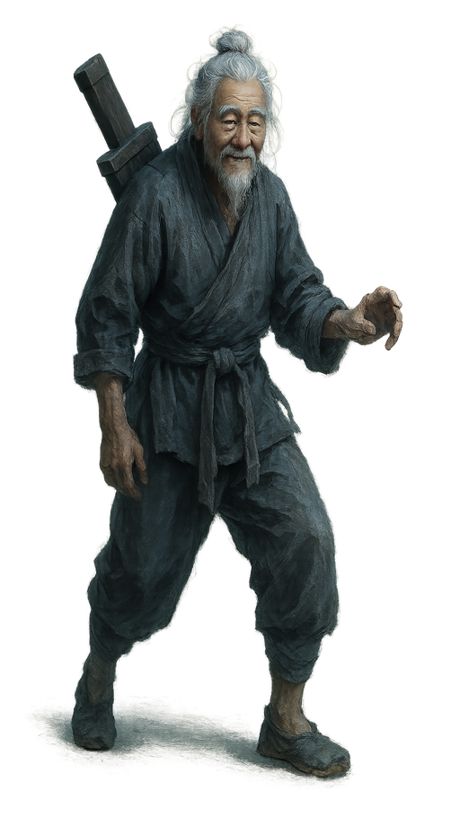 descriptionA deeply lined old face, cloudy eyes, white brows, gentle rustic smile. Hunched elderly groom build, white hair and beard in a loose untidy knot, dusty gray short jacket and cropped trousers tied with a coarse cloth belt, heavy wooden sword case strapped across his back, limping mid-stride, plain and harmless air final promptSemi-realistic Chinese wuxia character digital painting with cool cinematic mood, moonlit cinematic lighting with silver-blue key light and teal-blue shadows, neutral-cool color grading and desaturated palette, steel-gray ambient light with soft cyan rim, detailed fabric textures with believable cloth weight and painterly brushwork, impasto-style sculpted folds and armor/leather rendering, rich deep palette that stays firmly cool in temperature (blue, teal, slate, silver, indigo dominant), clean bright key light on the figure against pure white background, realistic adult human proportions and anatomy, elegant full-body figure with tangible physical presence, restrained composition with generous negative space, transparent background, no background scenery, clean blank backdrop, clean and focused single-character composition CRITICAL REQUIREMENT: The image must be completely free of any text, letters, words, characters, writing systems, calligraphy, seals, stamps, chop marks, red seal marks, watermarks, signatures, inscriptions, or labels of any kind anywhere in the image. The image should contain ONLY the visual subject with no decorative text elements. Subject: Full-body jianghu wuxia character portrait rendered in cool cinematic painterly style — A deeply lined old face, cloudy eyes, white brows, gentle rustic smile. Hunched elderly groom build, white hair and beard in a loose untidy knot, dusty gray short jacket and cropped trousers tied with a coarse cloth belt, heavy wooden sword case strapped across his back, limping mid-stride, plain and harmless air. The character stands in a poised, story-driven martial arts pose with tangible weight and grounded footing, full body from head to feet clearly visible. Costume, hairstyle, accessories, and weapons must faithfully follow the character description. Lighting is firmly COOL: moonlit silver-blue key light from above, soft cyan rim light on the silhouette, teal-blue shadow tones, neutral-cool midtones; absolutely no warm light, no sunset glow, no golden hour, no firelight — even on skin and fabric, shadows must fall cool-blue not warm-brown. Painterly brush strokes sculpt fabric folds and armor/leather details with impasto weight; costume colors stay in the cool-to-neutral range (blue, teal, slate, charcoal, silver, indigo, jade, steel) with clean accent hues; skin rendered with cool-neutral undertones (no orange/tan cast). Clean neutral rim light defining silhouette against pure white background. Transparent background, nothing else behind the character, clean blank negative space only. Vertical composition, character centered with elegant negative space. DO NOT include: no chibi, no Q-version, no oversized head, no photorealism portrait photo, no photo reference look, no western fantasy style, no 3D render, no oil painting, no complex background, no multiple characters, no extra arms, no extra fingers, no cropped feet, no distorted anatomy, no yellow, no yellow tint, no yellow cast, no warm cast, no warm color cast, no warm lighting, no warm palette, no golden hour, no golden lighting, no sunset lighting, no sunset palette, no sepia, no sepia tone, no ochre, no amber, no amber light, no firelight, no torch light, no candlelight, no dusk lighting, no campfire glow, no earth-tone dominance, no ochre-dominant palette, no brown-dominant palette, no tan skin cast, no orange skin, no orange tint, no warm skin lighting, no aged paper, no ivory background, no cream background, no paper texture, no rice paper look, no classical Chinese painting yellowing, no gongbi-on-silk look, no flat shading, no cel-shading, no anime flat look, no muddy dark palette, no dim gloomy lighting, no heavy grunge, no torn canvas, no dust haze, no dusty atmosphere |
温华 · variant 1
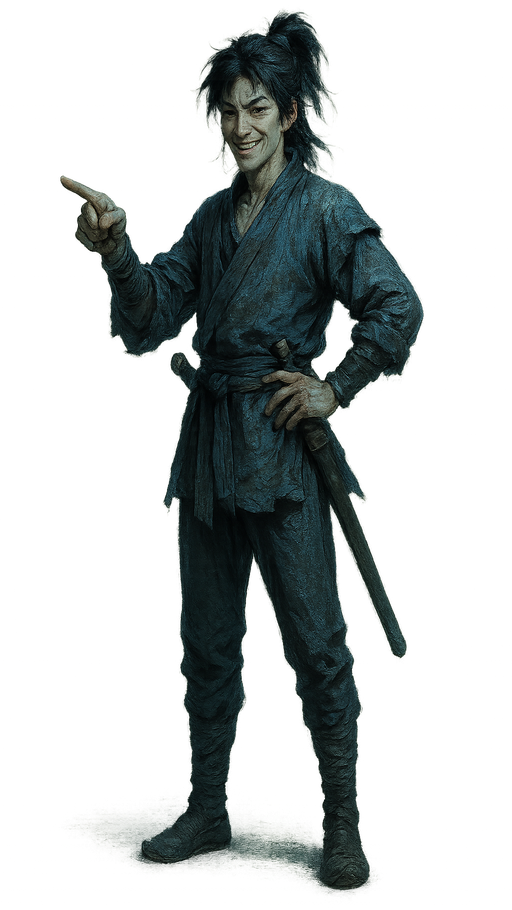 descriptionLean youthful face, slightly prominent cheekbones, bright stubborn eyes, grinning with sly pride. Tall skinny teenage swordsman, messy dark hair loosely tied with stray side tufts, patched blue short robe over narrow trousers, cloth belt holding a bamboo sword, one hand on hip and one finger pointing outward, scrappy street-smart swagger final promptSemi-realistic Chinese wuxia character digital painting with cool cinematic mood, moonlit cinematic lighting with silver-blue key light and teal-blue shadows, neutral-cool color grading and desaturated palette, steel-gray ambient light with soft cyan rim, detailed fabric textures with believable cloth weight and painterly brushwork, impasto-style sculpted folds and armor/leather rendering, rich deep palette that stays firmly cool in temperature (blue, teal, slate, silver, indigo dominant), clean bright key light on the figure against pure white background, realistic adult human proportions and anatomy, elegant full-body figure with tangible physical presence, restrained composition with generous negative space, transparent background, no background scenery, clean blank backdrop, clean and focused single-character composition CRITICAL REQUIREMENT: The image must be completely free of any text, letters, words, characters, writing systems, calligraphy, seals, stamps, chop marks, red seal marks, watermarks, signatures, inscriptions, or labels of any kind anywhere in the image. The image should contain ONLY the visual subject with no decorative text elements. Subject: Full-body jianghu wuxia character portrait rendered in cool cinematic painterly style — Lean youthful face, slightly prominent cheekbones, bright stubborn eyes, grinning with sly pride. Tall skinny teenage swordsman, messy dark hair loosely tied with stray side tufts, patched blue short robe over narrow trousers, cloth belt holding a bamboo sword, one hand on hip and one finger pointing outward, scrappy street-smart swagger. The character stands in a poised, story-driven martial arts pose with tangible weight and grounded footing, full body from head to feet clearly visible. Costume, hairstyle, accessories, and weapons must faithfully follow the character description. Lighting is firmly COOL: moonlit silver-blue key light from above, soft cyan rim light on the silhouette, teal-blue shadow tones, neutral-cool midtones; absolutely no warm light, no sunset glow, no golden hour, no firelight — even on skin and fabric, shadows must fall cool-blue not warm-brown. Painterly brush strokes sculpt fabric folds and armor/leather details with impasto weight; costume colors stay in the cool-to-neutral range (blue, teal, slate, charcoal, silver, indigo, jade, steel) with clean accent hues; skin rendered with cool-neutral undertones (no orange/tan cast). Clean neutral rim light defining silhouette against pure white background. Transparent background, nothing else behind the character, clean blank negative space only. Vertical composition, character centered with elegant negative space. DO NOT include: no chibi, no Q-version, no oversized head, no photorealism portrait photo, no photo reference look, no western fantasy style, no 3D render, no oil painting, no complex background, no multiple characters, no extra arms, no extra fingers, no cropped feet, no distorted anatomy, no yellow, no yellow tint, no yellow cast, no warm cast, no warm color cast, no warm lighting, no warm palette, no golden hour, no golden lighting, no sunset lighting, no sunset palette, no sepia, no sepia tone, no ochre, no amber, no amber light, no firelight, no torch light, no candlelight, no dusk lighting, no campfire glow, no earth-tone dominance, no ochre-dominant palette, no brown-dominant palette, no tan skin cast, no orange skin, no orange tint, no warm skin lighting, no aged paper, no ivory background, no cream background, no paper texture, no rice paper look, no classical Chinese painting yellowing, no gongbi-on-silk look, no flat shading, no cel-shading, no anime flat look, no muddy dark palette, no dim gloomy lighting, no heavy grunge, no torn canvas, no dust haze, no dusty atmosphere |
姜泥 · variant 1
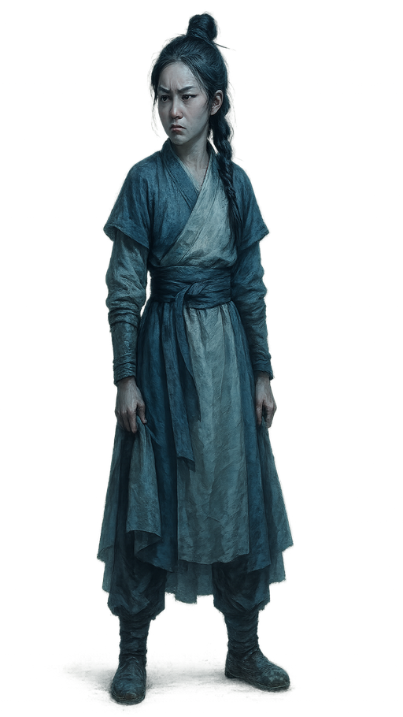 descriptionSmall oval face, slightly upturned eyes, youthful features, guarded and stubborn expression. Short, slender girl with a loose side braid of dark hair, plain off-white cloth dress neatly washed, narrow shoulders and wary stance, fingertips smudged with soil, one hand clutching the skirt hem, quiet injured pride final promptSemi-realistic Chinese wuxia character digital painting with cool cinematic mood, moonlit cinematic lighting with silver-blue key light and teal-blue shadows, neutral-cool color grading and desaturated palette, steel-gray ambient light with soft cyan rim, detailed fabric textures with believable cloth weight and painterly brushwork, impasto-style sculpted folds and armor/leather rendering, rich deep palette that stays firmly cool in temperature (blue, teal, slate, silver, indigo dominant), clean bright key light on the figure against pure white background, realistic adult human proportions and anatomy, elegant full-body figure with tangible physical presence, restrained composition with generous negative space, transparent background, no background scenery, clean blank backdrop, clean and focused single-character composition CRITICAL REQUIREMENT: The image must be completely free of any text, letters, words, characters, writing systems, calligraphy, seals, stamps, chop marks, red seal marks, watermarks, signatures, inscriptions, or labels of any kind anywhere in the image. The image should contain ONLY the visual subject with no decorative text elements. Subject: Full-body jianghu wuxia character portrait rendered in cool cinematic painterly style — Small oval face, slightly upturned eyes, youthful features, guarded and stubborn expression. Short, slender girl with a loose side braid of dark hair, plain off-white cloth dress neatly washed, narrow shoulders and wary stance, fingertips smudged with soil, one hand clutching the skirt hem, quiet injured pride. The character stands in a poised, story-driven martial arts pose with tangible weight and grounded footing, full body from head to feet clearly visible. Costume, hairstyle, and accessories must faithfully follow the character description. Lighting is firmly COOL: moonlit silver-blue key light from above, soft cyan rim light on the silhouette, teal-blue shadow tones, neutral-cool midtones; absolutely no warm light, no sunset glow, no golden hour, no firelight — even on skin and fabric, shadows must fall cool-blue not warm-brown. Painterly brush strokes sculpt fabric folds and armor/leather details with impasto weight; costume colors stay in the cool-to-neutral range (blue, teal, slate, charcoal, silver, indigo, jade, steel) with clean accent hues; skin rendered with cool-neutral undertones (no orange/tan cast). Clean neutral rim light defining silhouette against pure white background. Transparent background, nothing else behind the character, clean blank negative space only. Vertical composition, character centered with elegant negative space. DO NOT include: no chibi, no Q-version, no oversized head, no photorealism portrait photo, no photo reference look, no western fantasy style, no 3D render, no oil painting, no complex background, no multiple characters, no extra arms, no extra fingers, no cropped feet, no distorted anatomy, no yellow, no yellow tint, no yellow cast, no warm cast, no warm color cast, no warm lighting, no warm palette, no golden hour, no golden lighting, no sunset lighting, no sunset palette, no sepia, no sepia tone, no ochre, no amber, no amber light, no firelight, no torch light, no candlelight, no dusk lighting, no campfire glow, no earth-tone dominance, no ochre-dominant palette, no brown-dominant palette, no tan skin cast, no orange skin, no orange tint, no warm skin lighting, no aged paper, no ivory background, no cream background, no paper texture, no rice paper look, no classical Chinese painting yellowing, no gongbi-on-silk look, no flat shading, no cel-shading, no anime flat look, no muddy dark palette, no dim gloomy lighting, no heavy grunge, no torn canvas, no dust haze, no dusty atmosphere |
李淳罡 · variant 1
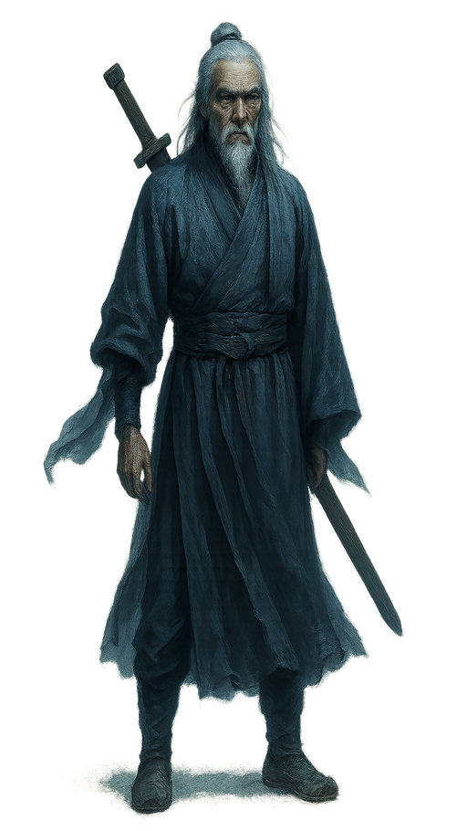 descriptionLean gaunt face, pronounced cheekbones, deep-set eyes, elderly and sternly restrained. tall wiry one-armed elder with shoulder-length white hair and full white beard, faded blue-gray robe hanging loose, empty right sleeve fluttering, old cloth shoes, plain wooden sword strapped across his back, straight pine-like posture, austere hidden-edge presence final promptSemi-realistic Chinese wuxia character digital painting with cool cinematic mood, moonlit cinematic lighting with silver-blue key light and teal-blue shadows, neutral-cool color grading and desaturated palette, steel-gray ambient light with soft cyan rim, detailed fabric textures with believable cloth weight and painterly brushwork, impasto-style sculpted folds and armor/leather rendering, rich deep palette that stays firmly cool in temperature (blue, teal, slate, silver, indigo dominant), clean bright key light on the figure against pure white background, realistic adult human proportions and anatomy, elegant full-body figure with tangible physical presence, restrained composition with generous negative space, transparent background, no background scenery, clean blank backdrop, clean and focused single-character composition CRITICAL REQUIREMENT: The image must be completely free of any text, letters, words, characters, writing systems, calligraphy, seals, stamps, chop marks, red seal marks, watermarks, signatures, inscriptions, or labels of any kind anywhere in the image. The image should contain ONLY the visual subject with no decorative text elements. Subject: Full-body jianghu wuxia character portrait rendered in cool cinematic painterly style — Lean gaunt face, pronounced cheekbones, deep-set eyes, elderly and sternly restrained. tall wiry one-armed elder with shoulder-length white hair and full white beard, faded blue-gray robe hanging loose, empty right sleeve fluttering, old cloth shoes, plain wooden sword strapped across his back, straight pine-like posture, austere hidden-edge presence. The character stands in a poised, story-driven martial arts pose with tangible weight and grounded footing, full body from head to feet clearly visible. Costume, hairstyle, accessories, and weapons must faithfully follow the character description. Lighting is firmly COOL: moonlit silver-blue key light from above, soft cyan rim light on the silhouette, teal-blue shadow tones, neutral-cool midtones; absolutely no warm light, no sunset glow, no golden hour, no firelight — even on skin and fabric, shadows must fall cool-blue not warm-brown. Painterly brush strokes sculpt fabric folds and armor/leather details with impasto weight; costume colors stay in the cool-to-neutral range (blue, teal, slate, charcoal, silver, indigo, jade, steel) with clean accent hues; skin rendered with cool-neutral undertones (no orange/tan cast). Clean neutral rim light defining silhouette against pure white background. Transparent background, nothing else behind the character, clean blank negative space only. Vertical composition, character centered with elegant negative space. DO NOT include: no chibi, no Q-version, no oversized head, no photorealism portrait photo, no photo reference look, no western fantasy style, no 3D render, no oil painting, no complex background, no multiple characters, no extra arms, no extra fingers, no cropped feet, no distorted anatomy, no yellow, no yellow tint, no yellow cast, no warm cast, no warm color cast, no warm lighting, no warm palette, no golden hour, no golden lighting, no sunset lighting, no sunset palette, no sepia, no sepia tone, no ochre, no amber, no amber light, no firelight, no torch light, no candlelight, no dusk lighting, no campfire glow, no earth-tone dominance, no ochre-dominant palette, no brown-dominant palette, no tan skin cast, no orange skin, no orange tint, no warm skin lighting, no aged paper, no ivory background, no cream background, no paper texture, no rice paper look, no classical Chinese painting yellowing, no gongbi-on-silk look, no flat shading, no cel-shading, no anime flat look, no muddy dark palette, no dim gloomy lighting, no heavy grunge, no torn canvas, no dust haze, no dusty atmosphere |
| variant 2 |
徐凤年 · variant 2
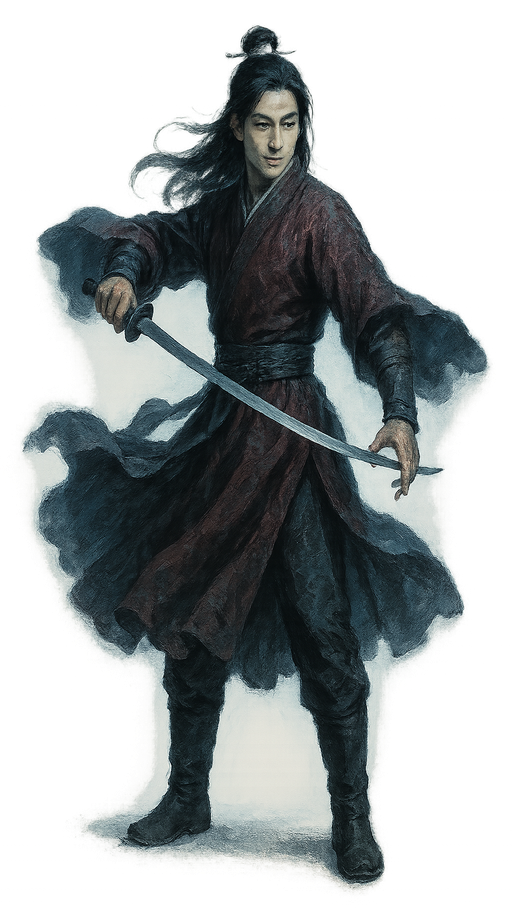 descriptionJade-fair oval face, clear bright eyes, straight brows, youthful yet world-weary, lazy smile. Lean full-body figure in a dark crimson brocade robe over narrow black trousers and boots, black hair half bound with a white jade hairpin, turning sharply while drawing the curved saber, sleeves snapping, restrained luxury and sudden menace final promptSemi-realistic Chinese wuxia character digital painting with cool cinematic mood, moonlit cinematic lighting with silver-blue key light and teal-blue shadows, neutral-cool color grading and desaturated palette, steel-gray ambient light with soft cyan rim, detailed fabric textures with believable cloth weight and painterly brushwork, impasto-style sculpted folds and armor/leather rendering, rich deep palette that stays firmly cool in temperature (blue, teal, slate, silver, indigo dominant), clean bright key light on the figure against pure white background, realistic adult human proportions and anatomy, elegant full-body figure with tangible physical presence, restrained composition with generous negative space, transparent background, no background scenery, clean blank backdrop, clean and focused single-character composition CRITICAL REQUIREMENT: The image must be completely free of any text, letters, words, characters, writing systems, calligraphy, seals, stamps, chop marks, red seal marks, watermarks, signatures, inscriptions, or labels of any kind anywhere in the image. The image should contain ONLY the visual subject with no decorative text elements. Subject: Full-body jianghu wuxia character portrait rendered in cool cinematic painterly style — Jade-fair oval face, clear bright eyes, straight brows, youthful yet world-weary, lazy smile. Lean full-body figure in a dark crimson brocade robe over narrow black trousers and boots, black hair half bound with a white jade hairpin, turning sharply while drawing the curved saber, sleeves snapping, restrained luxury and sudden menace. The character stands in a poised, story-driven martial arts pose with tangible weight and grounded footing, full body from head to feet clearly visible. Costume, hairstyle, accessories, and weapons must faithfully follow the character description. Lighting is firmly COOL: moonlit silver-blue key light from above, soft cyan rim light on the silhouette, teal-blue shadow tones, neutral-cool midtones; absolutely no warm light, no sunset glow, no golden hour, no firelight — even on skin and fabric, shadows must fall cool-blue not warm-brown. Painterly brush strokes sculpt fabric folds and armor/leather details with impasto weight; costume colors stay in the cool-to-neutral range (blue, teal, slate, charcoal, silver, indigo, jade, steel) with clean accent hues; skin rendered with cool-neutral undertones (no orange/tan cast). Clean neutral rim light defining silhouette against pure white background. Transparent background, nothing else behind the character, clean blank negative space only. Vertical composition, character centered with elegant negative space. DO NOT include: no chibi, no Q-version, no oversized head, no photorealism portrait photo, no photo reference look, no western fantasy style, no 3D render, no oil painting, no complex background, no multiple characters, no extra arms, no extra fingers, no cropped feet, no distorted anatomy, no yellow, no yellow tint, no yellow cast, no warm cast, no warm color cast, no warm lighting, no warm palette, no golden hour, no golden lighting, no sunset lighting, no sunset palette, no sepia, no sepia tone, no ochre, no amber, no amber light, no firelight, no torch light, no candlelight, no dusk lighting, no campfire glow, no earth-tone dominance, no ochre-dominant palette, no brown-dominant palette, no tan skin cast, no orange skin, no orange tint, no warm skin lighting, no aged paper, no ivory background, no cream background, no paper texture, no rice paper look, no classical Chinese painting yellowing, no gongbi-on-silk look, no flat shading, no cel-shading, no anime flat look, no muddy dark palette, no dim gloomy lighting, no heavy grunge, no torn canvas, no dust haze, no dusty atmosphere |
老黄 · variant 2
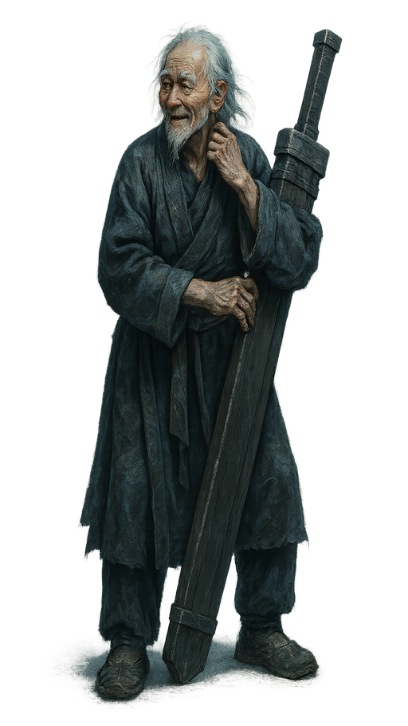 descriptionA deeply lined old face, cloudy eyes, white brows, gentle rustic smile. Stooped, thin old man with straggling white hair, worn brown roughspun coat over faded dark trousers, frayed cloth shoes, one hand scratching his neck while the other steadies a massive wooden sword case, awkward half-turn, simpleminded village elder bearing final promptSemi-realistic Chinese wuxia character digital painting with cool cinematic mood, moonlit cinematic lighting with silver-blue key light and teal-blue shadows, neutral-cool color grading and desaturated palette, steel-gray ambient light with soft cyan rim, detailed fabric textures with believable cloth weight and painterly brushwork, impasto-style sculpted folds and armor/leather rendering, rich deep palette that stays firmly cool in temperature (blue, teal, slate, silver, indigo dominant), clean bright key light on the figure against pure white background, realistic adult human proportions and anatomy, elegant full-body figure with tangible physical presence, restrained composition with generous negative space, transparent background, no background scenery, clean blank backdrop, clean and focused single-character composition CRITICAL REQUIREMENT: The image must be completely free of any text, letters, words, characters, writing systems, calligraphy, seals, stamps, chop marks, red seal marks, watermarks, signatures, inscriptions, or labels of any kind anywhere in the image. The image should contain ONLY the visual subject with no decorative text elements. Subject: Full-body jianghu wuxia character portrait rendered in cool cinematic painterly style — A deeply lined old face, cloudy eyes, white brows, gentle rustic smile. Stooped, thin old man with straggling white hair, worn brown roughspun coat over faded dark trousers, frayed cloth shoes, one hand scratching his neck while the other steadies a massive wooden sword case, awkward half-turn, simpleminded village elder bearing. The character stands in a poised, story-driven martial arts pose with tangible weight and grounded footing, full body from head to feet clearly visible. Costume, hairstyle, accessories, and weapons must faithfully follow the character description. Lighting is firmly COOL: moonlit silver-blue key light from above, soft cyan rim light on the silhouette, teal-blue shadow tones, neutral-cool midtones; absolutely no warm light, no sunset glow, no golden hour, no firelight — even on skin and fabric, shadows must fall cool-blue not warm-brown. Painterly brush strokes sculpt fabric folds and armor/leather details with impasto weight; costume colors stay in the cool-to-neutral range (blue, teal, slate, charcoal, silver, indigo, jade, steel) with clean accent hues; skin rendered with cool-neutral undertones (no orange/tan cast). Clean neutral rim light defining silhouette against pure white background. Transparent background, nothing else behind the character, clean blank negative space only. Vertical composition, character centered with elegant negative space. DO NOT include: no chibi, no Q-version, no oversized head, no photorealism portrait photo, no photo reference look, no western fantasy style, no 3D render, no oil painting, no complex background, no multiple characters, no extra arms, no extra fingers, no cropped feet, no distorted anatomy, no yellow, no yellow tint, no yellow cast, no warm cast, no warm color cast, no warm lighting, no warm palette, no golden hour, no golden lighting, no sunset lighting, no sunset palette, no sepia, no sepia tone, no ochre, no amber, no amber light, no firelight, no torch light, no candlelight, no dusk lighting, no campfire glow, no earth-tone dominance, no ochre-dominant palette, no brown-dominant palette, no tan skin cast, no orange skin, no orange tint, no warm skin lighting, no aged paper, no ivory background, no cream background, no paper texture, no rice paper look, no classical Chinese painting yellowing, no gongbi-on-silk look, no flat shading, no cel-shading, no anime flat look, no muddy dark palette, no dim gloomy lighting, no heavy grunge, no torn canvas, no dust haze, no dusty atmosphere |
温华 · variant 2
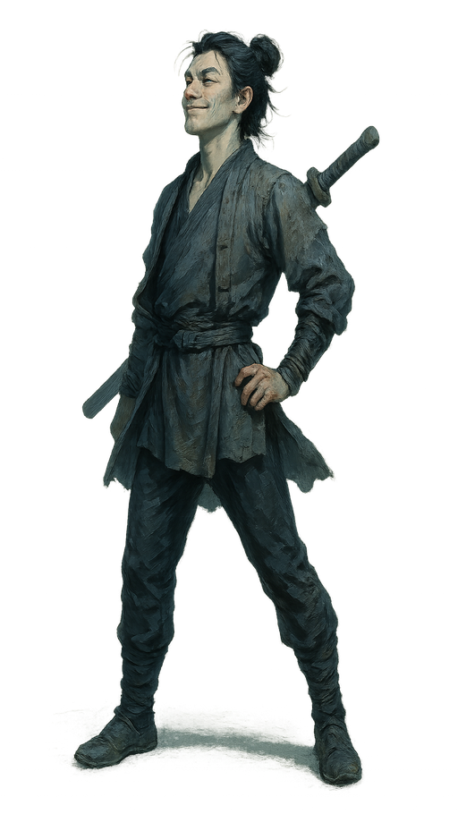 descriptionLean youthful face, slightly prominent cheekbones, bright stubborn eyes, grinning with sly pride. Lanky young figure in a faded brown patched jacket and black leggings, dark hair carelessly knotted, wooden sword slung across the lower back, mid-stride with chest thrust forward and chin raised, boastful wanderer energy final promptSemi-realistic Chinese wuxia character digital painting with cool cinematic mood, moonlit cinematic lighting with silver-blue key light and teal-blue shadows, neutral-cool color grading and desaturated palette, steel-gray ambient light with soft cyan rim, detailed fabric textures with believable cloth weight and painterly brushwork, impasto-style sculpted folds and armor/leather rendering, rich deep palette that stays firmly cool in temperature (blue, teal, slate, silver, indigo dominant), clean bright key light on the figure against pure white background, realistic adult human proportions and anatomy, elegant full-body figure with tangible physical presence, restrained composition with generous negative space, transparent background, no background scenery, clean blank backdrop, clean and focused single-character composition CRITICAL REQUIREMENT: The image must be completely free of any text, letters, words, characters, writing systems, calligraphy, seals, stamps, chop marks, red seal marks, watermarks, signatures, inscriptions, or labels of any kind anywhere in the image. The image should contain ONLY the visual subject with no decorative text elements. Subject: Full-body jianghu wuxia character portrait rendered in cool cinematic painterly style — Lean youthful face, slightly prominent cheekbones, bright stubborn eyes, grinning with sly pride. Lanky young figure in a faded brown patched jacket and black leggings, dark hair carelessly knotted, wooden sword slung across the lower back, mid-stride with chest thrust forward and chin raised, boastful wanderer energy. The character stands in a poised, story-driven martial arts pose with tangible weight and grounded footing, full body from head to feet clearly visible. Costume, hairstyle, accessories, and weapons must faithfully follow the character description. Lighting is firmly COOL: moonlit silver-blue key light from above, soft cyan rim light on the silhouette, teal-blue shadow tones, neutral-cool midtones; absolutely no warm light, no sunset glow, no golden hour, no firelight — even on skin and fabric, shadows must fall cool-blue not warm-brown. Painterly brush strokes sculpt fabric folds and armor/leather details with impasto weight; costume colors stay in the cool-to-neutral range (blue, teal, slate, charcoal, silver, indigo, jade, steel) with clean accent hues; skin rendered with cool-neutral undertones (no orange/tan cast). Clean neutral rim light defining silhouette against pure white background. Transparent background, nothing else behind the character, clean blank negative space only. Vertical composition, character centered with elegant negative space. DO NOT include: no chibi, no Q-version, no oversized head, no photorealism portrait photo, no photo reference look, no western fantasy style, no 3D render, no oil painting, no complex background, no multiple characters, no extra arms, no extra fingers, no cropped feet, no distorted anatomy, no yellow, no yellow tint, no yellow cast, no warm cast, no warm color cast, no warm lighting, no warm palette, no golden hour, no golden lighting, no sunset lighting, no sunset palette, no sepia, no sepia tone, no ochre, no amber, no amber light, no firelight, no torch light, no candlelight, no dusk lighting, no campfire glow, no earth-tone dominance, no ochre-dominant palette, no brown-dominant palette, no tan skin cast, no orange skin, no orange tint, no warm skin lighting, no aged paper, no ivory background, no cream background, no paper texture, no rice paper look, no classical Chinese painting yellowing, no gongbi-on-silk look, no flat shading, no cel-shading, no anime flat look, no muddy dark palette, no dim gloomy lighting, no heavy grunge, no torn canvas, no dust haze, no dusty atmosphere |
姜泥 · variant 2
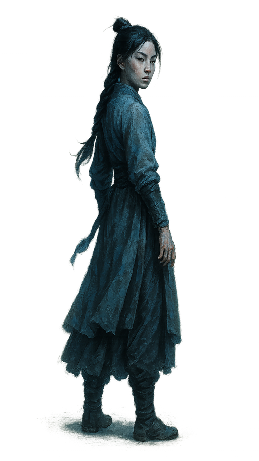 descriptionSmall oval face, slightly upturned eyes, youthful features, guarded and stubborn expression. Petite thin frame, black hair braided over one shoulder with stray wisps, muted pale blue coarse dress and dark sash, half-turned as if retreating, chin lifted, hands marked by dirt, restrained resentment and lonely nobility final promptSemi-realistic Chinese wuxia character digital painting with cool cinematic mood, moonlit cinematic lighting with silver-blue key light and teal-blue shadows, neutral-cool color grading and desaturated palette, steel-gray ambient light with soft cyan rim, detailed fabric textures with believable cloth weight and painterly brushwork, impasto-style sculpted folds and armor/leather rendering, rich deep palette that stays firmly cool in temperature (blue, teal, slate, silver, indigo dominant), clean bright key light on the figure against pure white background, realistic adult human proportions and anatomy, elegant full-body figure with tangible physical presence, restrained composition with generous negative space, transparent background, no background scenery, clean blank backdrop, clean and focused single-character composition CRITICAL REQUIREMENT: The image must be completely free of any text, letters, words, characters, writing systems, calligraphy, seals, stamps, chop marks, red seal marks, watermarks, signatures, inscriptions, or labels of any kind anywhere in the image. The image should contain ONLY the visual subject with no decorative text elements. Subject: Full-body jianghu wuxia character portrait rendered in cool cinematic painterly style — Small oval face, slightly upturned eyes, youthful features, guarded and stubborn expression. Petite thin frame, black hair braided over one shoulder with stray wisps, muted pale blue coarse dress and dark sash, half-turned as if retreating, chin lifted, hands marked by dirt, restrained resentment and lonely nobility. The character stands in a poised, story-driven martial arts pose with tangible weight and grounded footing, full body from head to feet clearly visible. Costume, hairstyle, and accessories must faithfully follow the character description. Lighting is firmly COOL: moonlit silver-blue key light from above, soft cyan rim light on the silhouette, teal-blue shadow tones, neutral-cool midtones; absolutely no warm light, no sunset glow, no golden hour, no firelight — even on skin and fabric, shadows must fall cool-blue not warm-brown. Painterly brush strokes sculpt fabric folds and armor/leather details with impasto weight; costume colors stay in the cool-to-neutral range (blue, teal, slate, charcoal, silver, indigo, jade, steel) with clean accent hues; skin rendered with cool-neutral undertones (no orange/tan cast). Clean neutral rim light defining silhouette against pure white background. Transparent background, nothing else behind the character, clean blank negative space only. Vertical composition, character centered with elegant negative space. DO NOT include: no chibi, no Q-version, no oversized head, no photorealism portrait photo, no photo reference look, no western fantasy style, no 3D render, no oil painting, no complex background, no multiple characters, no extra arms, no extra fingers, no cropped feet, no distorted anatomy, no yellow, no yellow tint, no yellow cast, no warm cast, no warm color cast, no warm lighting, no warm palette, no golden hour, no golden lighting, no sunset lighting, no sunset palette, no sepia, no sepia tone, no ochre, no amber, no amber light, no firelight, no torch light, no candlelight, no dusk lighting, no campfire glow, no earth-tone dominance, no ochre-dominant palette, no brown-dominant palette, no tan skin cast, no orange skin, no orange tint, no warm skin lighting, no aged paper, no ivory background, no cream background, no paper texture, no rice paper look, no classical Chinese painting yellowing, no gongbi-on-silk look, no flat shading, no cel-shading, no anime flat look, no muddy dark palette, no dim gloomy lighting, no heavy grunge, no torn canvas, no dust haze, no dusty atmosphere |
李淳罡 · variant 2
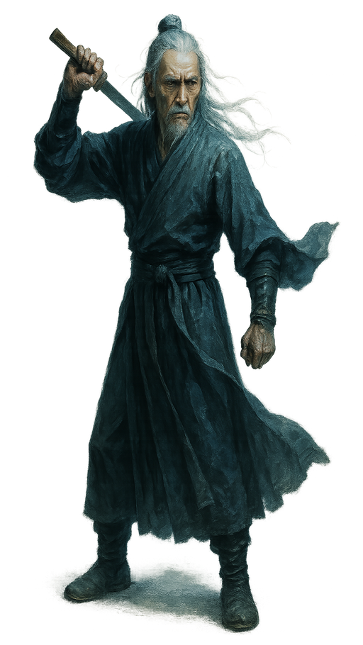 descriptionLean gaunt face, pronounced cheekbones, deep-set eyes, elderly and sternly restrained. thin one-armed swordsman in a washed-out dark teal robe with narrow sash, white hair half-tied and trailing, left hand lifting a plain wooden sword from behind his shoulder, torso half-turned mid-draw, empty sleeve snapping outward, fierce old-master severity final promptSemi-realistic Chinese wuxia character digital painting with cool cinematic mood, moonlit cinematic lighting with silver-blue key light and teal-blue shadows, neutral-cool color grading and desaturated palette, steel-gray ambient light with soft cyan rim, detailed fabric textures with believable cloth weight and painterly brushwork, impasto-style sculpted folds and armor/leather rendering, rich deep palette that stays firmly cool in temperature (blue, teal, slate, silver, indigo dominant), clean bright key light on the figure against pure white background, realistic adult human proportions and anatomy, elegant full-body figure with tangible physical presence, restrained composition with generous negative space, transparent background, no background scenery, clean blank backdrop, clean and focused single-character composition CRITICAL REQUIREMENT: The image must be completely free of any text, letters, words, characters, writing systems, calligraphy, seals, stamps, chop marks, red seal marks, watermarks, signatures, inscriptions, or labels of any kind anywhere in the image. The image should contain ONLY the visual subject with no decorative text elements. Subject: Full-body jianghu wuxia character portrait rendered in cool cinematic painterly style — Lean gaunt face, pronounced cheekbones, deep-set eyes, elderly and sternly restrained. thin one-armed swordsman in a washed-out dark teal robe with narrow sash, white hair half-tied and trailing, left hand lifting a plain wooden sword from behind his shoulder, torso half-turned mid-draw, empty sleeve snapping outward, fierce old-master severity. The character stands in a poised, story-driven martial arts pose with tangible weight and grounded footing, full body from head to feet clearly visible. Costume, hairstyle, accessories, and weapons must faithfully follow the character description. Lighting is firmly COOL: moonlit silver-blue key light from above, soft cyan rim light on the silhouette, teal-blue shadow tones, neutral-cool midtones; absolutely no warm light, no sunset glow, no golden hour, no firelight — even on skin and fabric, shadows must fall cool-blue not warm-brown. Painterly brush strokes sculpt fabric folds and armor/leather details with impasto weight; costume colors stay in the cool-to-neutral range (blue, teal, slate, charcoal, silver, indigo, jade, steel) with clean accent hues; skin rendered with cool-neutral undertones (no orange/tan cast). Clean neutral rim light defining silhouette against pure white background. Transparent background, nothing else behind the character, clean blank negative space only. Vertical composition, character centered with elegant negative space. DO NOT include: no chibi, no Q-version, no oversized head, no photorealism portrait photo, no photo reference look, no western fantasy style, no 3D render, no oil painting, no complex background, no multiple characters, no extra arms, no extra fingers, no cropped feet, no distorted anatomy, no yellow, no yellow tint, no yellow cast, no warm cast, no warm color cast, no warm lighting, no warm palette, no golden hour, no golden lighting, no sunset lighting, no sunset palette, no sepia, no sepia tone, no ochre, no amber, no amber light, no firelight, no torch light, no candlelight, no dusk lighting, no campfire glow, no earth-tone dominance, no ochre-dominant palette, no brown-dominant palette, no tan skin cast, no orange skin, no orange tint, no warm skin lighting, no aged paper, no ivory background, no cream background, no paper texture, no rice paper look, no classical Chinese painting yellowing, no gongbi-on-silk look, no flat shading, no cel-shading, no anime flat look, no muddy dark palette, no dim gloomy lighting, no heavy grunge, no torn canvas, no dust haze, no dusty atmosphere |
| variant 3 |
徐凤年 · variant 3
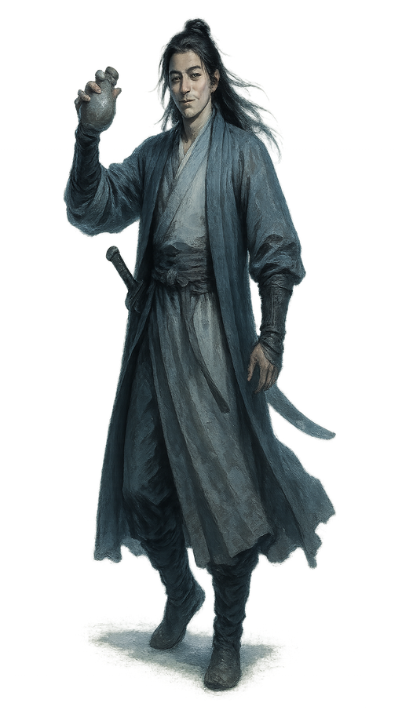 descriptionJade-fair oval face, clear bright eyes, straight brows, youthful yet world-weary, lazy smile. Tall slim frame in a pale ivory inner robe beneath a soft gray-blue outer coat, long black hair loosely tied, curved saber resting at the hip, wine gourd lifted casually in one hand, relaxed mid-stride, amused and unbothered wanderer air final promptSemi-realistic Chinese wuxia character digital painting with cool cinematic mood, moonlit cinematic lighting with silver-blue key light and teal-blue shadows, neutral-cool color grading and desaturated palette, steel-gray ambient light with soft cyan rim, detailed fabric textures with believable cloth weight and painterly brushwork, impasto-style sculpted folds and armor/leather rendering, rich deep palette that stays firmly cool in temperature (blue, teal, slate, silver, indigo dominant), clean bright key light on the figure against pure white background, realistic adult human proportions and anatomy, elegant full-body figure with tangible physical presence, restrained composition with generous negative space, transparent background, no background scenery, clean blank backdrop, clean and focused single-character composition CRITICAL REQUIREMENT: The image must be completely free of any text, letters, words, characters, writing systems, calligraphy, seals, stamps, chop marks, red seal marks, watermarks, signatures, inscriptions, or labels of any kind anywhere in the image. The image should contain ONLY the visual subject with no decorative text elements. Subject: Full-body jianghu wuxia character portrait rendered in cool cinematic painterly style — Jade-fair oval face, clear bright eyes, straight brows, youthful yet world-weary, lazy smile. Tall slim frame in a pale ivory inner robe beneath a soft gray-blue outer coat, long black hair loosely tied, curved saber resting at the hip, wine gourd lifted casually in one hand, relaxed mid-stride, amused and unbothered wanderer air. The character stands in a poised, story-driven martial arts pose with tangible weight and grounded footing, full body from head to feet clearly visible. Costume, hairstyle, accessories, and weapons must faithfully follow the character description. Lighting is firmly COOL: moonlit silver-blue key light from above, soft cyan rim light on the silhouette, teal-blue shadow tones, neutral-cool midtones; absolutely no warm light, no sunset glow, no golden hour, no firelight — even on skin and fabric, shadows must fall cool-blue not warm-brown. Painterly brush strokes sculpt fabric folds and armor/leather details with impasto weight; costume colors stay in the cool-to-neutral range (blue, teal, slate, charcoal, silver, indigo, jade, steel) with clean accent hues; skin rendered with cool-neutral undertones (no orange/tan cast). Clean neutral rim light defining silhouette against pure white background. Transparent background, nothing else behind the character, clean blank negative space only. Vertical composition, character centered with elegant negative space. DO NOT include: no chibi, no Q-version, no oversized head, no photorealism portrait photo, no photo reference look, no western fantasy style, no 3D render, no oil painting, no complex background, no multiple characters, no extra arms, no extra fingers, no cropped feet, no distorted anatomy, no yellow, no yellow tint, no yellow cast, no warm cast, no warm color cast, no warm lighting, no warm palette, no golden hour, no golden lighting, no sunset lighting, no sunset palette, no sepia, no sepia tone, no ochre, no amber, no amber light, no firelight, no torch light, no candlelight, no dusk lighting, no campfire glow, no earth-tone dominance, no ochre-dominant palette, no brown-dominant palette, no tan skin cast, no orange skin, no orange tint, no warm skin lighting, no aged paper, no ivory background, no cream background, no paper texture, no rice paper look, no classical Chinese painting yellowing, no gongbi-on-silk look, no flat shading, no cel-shading, no anime flat look, no muddy dark palette, no dim gloomy lighting, no heavy grunge, no torn canvas, no dust haze, no dusty atmosphere |
老黄 · variant 3
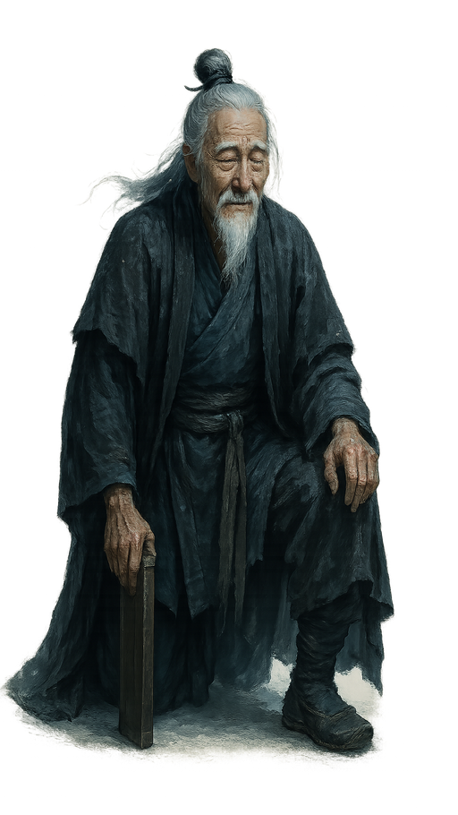 descriptionA deeply lined old face, cloudy eyes, white brows, gentle rustic smile. Lean hunched frame, white beard fluttering beneath a patched charcoal outer robe and dull blue underlayer, coarse sash at the waist, knees bent in a low kneeling posture as one hand rests on the wooden sword case, quiet death-worn calm final promptSemi-realistic Chinese wuxia character digital painting with cool cinematic mood, moonlit cinematic lighting with silver-blue key light and teal-blue shadows, neutral-cool color grading and desaturated palette, steel-gray ambient light with soft cyan rim, detailed fabric textures with believable cloth weight and painterly brushwork, impasto-style sculpted folds and armor/leather rendering, rich deep palette that stays firmly cool in temperature (blue, teal, slate, silver, indigo dominant), clean bright key light on the figure against pure white background, realistic adult human proportions and anatomy, elegant full-body figure with tangible physical presence, restrained composition with generous negative space, transparent background, no background scenery, clean blank backdrop, clean and focused single-character composition CRITICAL REQUIREMENT: The image must be completely free of any text, letters, words, characters, writing systems, calligraphy, seals, stamps, chop marks, red seal marks, watermarks, signatures, inscriptions, or labels of any kind anywhere in the image. The image should contain ONLY the visual subject with no decorative text elements. Subject: Full-body jianghu wuxia character portrait rendered in cool cinematic painterly style — A deeply lined old face, cloudy eyes, white brows, gentle rustic smile. Lean hunched frame, white beard fluttering beneath a patched charcoal outer robe and dull blue underlayer, coarse sash at the waist, knees bent in a low kneeling posture as one hand rests on the wooden sword case, quiet death-worn calm. The character stands in a poised, story-driven martial arts pose with tangible weight and grounded footing, full body from head to feet clearly visible. Costume, hairstyle, accessories, and weapons must faithfully follow the character description. Lighting is firmly COOL: moonlit silver-blue key light from above, soft cyan rim light on the silhouette, teal-blue shadow tones, neutral-cool midtones; absolutely no warm light, no sunset glow, no golden hour, no firelight — even on skin and fabric, shadows must fall cool-blue not warm-brown. Painterly brush strokes sculpt fabric folds and armor/leather details with impasto weight; costume colors stay in the cool-to-neutral range (blue, teal, slate, charcoal, silver, indigo, jade, steel) with clean accent hues; skin rendered with cool-neutral undertones (no orange/tan cast). Clean neutral rim light defining silhouette against pure white background. Transparent background, nothing else behind the character, clean blank negative space only. Vertical composition, character centered with elegant negative space. DO NOT include: no chibi, no Q-version, no oversized head, no photorealism portrait photo, no photo reference look, no western fantasy style, no 3D render, no oil painting, no complex background, no multiple characters, no extra arms, no extra fingers, no cropped feet, no distorted anatomy, no yellow, no yellow tint, no yellow cast, no warm cast, no warm color cast, no warm lighting, no warm palette, no golden hour, no golden lighting, no sunset lighting, no sunset palette, no sepia, no sepia tone, no ochre, no amber, no amber light, no firelight, no torch light, no candlelight, no dusk lighting, no campfire glow, no earth-tone dominance, no ochre-dominant palette, no brown-dominant palette, no tan skin cast, no orange skin, no orange tint, no warm skin lighting, no aged paper, no ivory background, no cream background, no paper texture, no rice paper look, no classical Chinese painting yellowing, no gongbi-on-silk look, no flat shading, no cel-shading, no anime flat look, no muddy dark palette, no dim gloomy lighting, no heavy grunge, no torn canvas, no dust haze, no dusty atmosphere |
温华 · variant 3
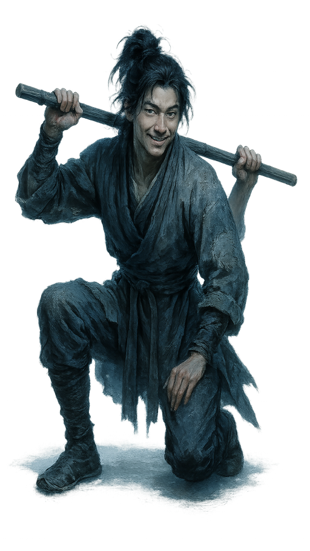 descriptionLean youthful face, slightly prominent cheekbones, bright stubborn eyes, grinning with sly pride. Thin tall body crouched low on one knee, rumpled gray short robe with patched elbows, loose dark hair tied back but untidy, both hands lifting a bamboo sword across the shoulders, cocky yet hungry drifter air final promptSemi-realistic Chinese wuxia character digital painting with cool cinematic mood, moonlit cinematic lighting with silver-blue key light and teal-blue shadows, neutral-cool color grading and desaturated palette, steel-gray ambient light with soft cyan rim, detailed fabric textures with believable cloth weight and painterly brushwork, impasto-style sculpted folds and armor/leather rendering, rich deep palette that stays firmly cool in temperature (blue, teal, slate, silver, indigo dominant), clean bright key light on the figure against pure white background, realistic adult human proportions and anatomy, elegant full-body figure with tangible physical presence, restrained composition with generous negative space, transparent background, no background scenery, clean blank backdrop, clean and focused single-character composition CRITICAL REQUIREMENT: The image must be completely free of any text, letters, words, characters, writing systems, calligraphy, seals, stamps, chop marks, red seal marks, watermarks, signatures, inscriptions, or labels of any kind anywhere in the image. The image should contain ONLY the visual subject with no decorative text elements. Subject: Full-body jianghu wuxia character portrait rendered in cool cinematic painterly style — Lean youthful face, slightly prominent cheekbones, bright stubborn eyes, grinning with sly pride. Thin tall body crouched low on one knee, rumpled gray short robe with patched elbows, loose dark hair tied back but untidy, both hands lifting a bamboo sword across the shoulders, cocky yet hungry drifter air. The character stands in a poised, story-driven martial arts pose with tangible weight and grounded footing, full body from head to feet clearly visible. Costume, hairstyle, accessories, and weapons must faithfully follow the character description. Lighting is firmly COOL: moonlit silver-blue key light from above, soft cyan rim light on the silhouette, teal-blue shadow tones, neutral-cool midtones; absolutely no warm light, no sunset glow, no golden hour, no firelight — even on skin and fabric, shadows must fall cool-blue not warm-brown. Painterly brush strokes sculpt fabric folds and armor/leather details with impasto weight; costume colors stay in the cool-to-neutral range (blue, teal, slate, charcoal, silver, indigo, jade, steel) with clean accent hues; skin rendered with cool-neutral undertones (no orange/tan cast). Clean neutral rim light defining silhouette against pure white background. Transparent background, nothing else behind the character, clean blank negative space only. Vertical composition, character centered with elegant negative space. DO NOT include: no chibi, no Q-version, no oversized head, no photorealism portrait photo, no photo reference look, no western fantasy style, no 3D render, no oil painting, no complex background, no multiple characters, no extra arms, no extra fingers, no cropped feet, no distorted anatomy, no yellow, no yellow tint, no yellow cast, no warm cast, no warm color cast, no warm lighting, no warm palette, no golden hour, no golden lighting, no sunset lighting, no sunset palette, no sepia, no sepia tone, no ochre, no amber, no amber light, no firelight, no torch light, no candlelight, no dusk lighting, no campfire glow, no earth-tone dominance, no ochre-dominant palette, no brown-dominant palette, no tan skin cast, no orange skin, no orange tint, no warm skin lighting, no aged paper, no ivory background, no cream background, no paper texture, no rice paper look, no classical Chinese painting yellowing, no gongbi-on-silk look, no flat shading, no cel-shading, no anime flat look, no muddy dark palette, no dim gloomy lighting, no heavy grunge, no torn canvas, no dust haze, no dusty atmosphere |
姜泥 · variant 3
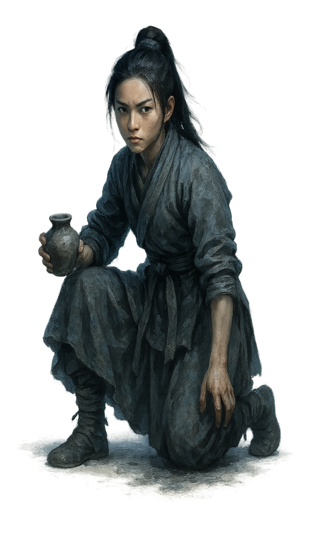 descriptionSmall oval face, slightly upturned eyes, youthful features, guarded and stubborn expression. Slim undersized figure in a faded gray-brown homespun skirt and short jacket, dark braid hanging forward, knees bent in a crouched working pose, one hand holding a small clay pot, the other soil-stained, silent feral caution final promptSemi-realistic Chinese wuxia character digital painting with cool cinematic mood, moonlit cinematic lighting with silver-blue key light and teal-blue shadows, neutral-cool color grading and desaturated palette, steel-gray ambient light with soft cyan rim, detailed fabric textures with believable cloth weight and painterly brushwork, impasto-style sculpted folds and armor/leather rendering, rich deep palette that stays firmly cool in temperature (blue, teal, slate, silver, indigo dominant), clean bright key light on the figure against pure white background, realistic adult human proportions and anatomy, elegant full-body figure with tangible physical presence, restrained composition with generous negative space, transparent background, no background scenery, clean blank backdrop, clean and focused single-character composition CRITICAL REQUIREMENT: The image must be completely free of any text, letters, words, characters, writing systems, calligraphy, seals, stamps, chop marks, red seal marks, watermarks, signatures, inscriptions, or labels of any kind anywhere in the image. The image should contain ONLY the visual subject with no decorative text elements. Subject: Full-body jianghu wuxia character portrait rendered in cool cinematic painterly style — Small oval face, slightly upturned eyes, youthful features, guarded and stubborn expression. Slim undersized figure in a faded gray-brown homespun skirt and short jacket, dark braid hanging forward, knees bent in a crouched working pose, one hand holding a small clay pot, the other soil-stained, silent feral caution. The character stands in a poised, story-driven martial arts pose with tangible weight and grounded footing, full body from head to feet clearly visible. Costume, hairstyle, and accessories must faithfully follow the character description. Lighting is firmly COOL: moonlit silver-blue key light from above, soft cyan rim light on the silhouette, teal-blue shadow tones, neutral-cool midtones; absolutely no warm light, no sunset glow, no golden hour, no firelight — even on skin and fabric, shadows must fall cool-blue not warm-brown. Painterly brush strokes sculpt fabric folds and armor/leather details with impasto weight; costume colors stay in the cool-to-neutral range (blue, teal, slate, charcoal, silver, indigo, jade, steel) with clean accent hues; skin rendered with cool-neutral undertones (no orange/tan cast). Clean neutral rim light defining silhouette against pure white background. Transparent background, nothing else behind the character, clean blank negative space only. Vertical composition, character centered with elegant negative space. DO NOT include: no chibi, no Q-version, no oversized head, no photorealism portrait photo, no photo reference look, no western fantasy style, no 3D render, no oil painting, no complex background, no multiple characters, no extra arms, no extra fingers, no cropped feet, no distorted anatomy, no yellow, no yellow tint, no yellow cast, no warm cast, no warm color cast, no warm lighting, no warm palette, no golden hour, no golden lighting, no sunset lighting, no sunset palette, no sepia, no sepia tone, no ochre, no amber, no amber light, no firelight, no torch light, no candlelight, no dusk lighting, no campfire glow, no earth-tone dominance, no ochre-dominant palette, no brown-dominant palette, no tan skin cast, no orange skin, no orange tint, no warm skin lighting, no aged paper, no ivory background, no cream background, no paper texture, no rice paper look, no classical Chinese painting yellowing, no gongbi-on-silk look, no flat shading, no cel-shading, no anime flat look, no muddy dark palette, no dim gloomy lighting, no heavy grunge, no torn canvas, no dust haze, no dusty atmosphere |
李淳罡 · variant 3
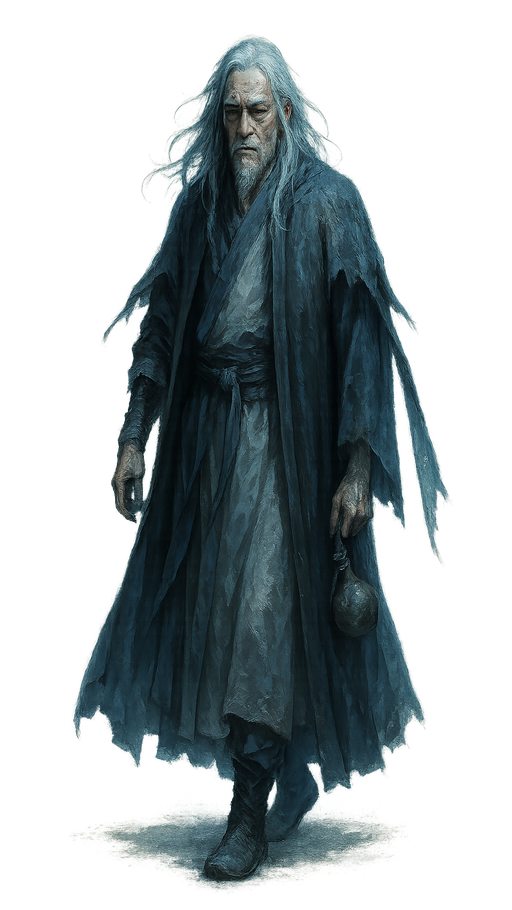 descriptionLean gaunt face, pronounced cheekbones, deep-set eyes, elderly and sternly restrained. spare frame wrapped in a pale ash robe under a weathered charcoal outer cloak, long white hair loose over the shoulders, left hand resting on a hanging wine gourd, broken right sleeve pinned and swaying, slightly stooped walking stride, lonely unruly veteran air final promptSemi-realistic Chinese wuxia character digital painting with cool cinematic mood, moonlit cinematic lighting with silver-blue key light and teal-blue shadows, neutral-cool color grading and desaturated palette, steel-gray ambient light with soft cyan rim, detailed fabric textures with believable cloth weight and painterly brushwork, impasto-style sculpted folds and armor/leather rendering, rich deep palette that stays firmly cool in temperature (blue, teal, slate, silver, indigo dominant), clean bright key light on the figure against pure white background, realistic adult human proportions and anatomy, elegant full-body figure with tangible physical presence, restrained composition with generous negative space, transparent background, no background scenery, clean blank backdrop, clean and focused single-character composition CRITICAL REQUIREMENT: The image must be completely free of any text, letters, words, characters, writing systems, calligraphy, seals, stamps, chop marks, red seal marks, watermarks, signatures, inscriptions, or labels of any kind anywhere in the image. The image should contain ONLY the visual subject with no decorative text elements. Subject: Full-body jianghu wuxia character portrait rendered in cool cinematic painterly style — Lean gaunt face, pronounced cheekbones, deep-set eyes, elderly and sternly restrained. spare frame wrapped in a pale ash robe under a weathered charcoal outer cloak, long white hair loose over the shoulders, left hand resting on a hanging wine gourd, broken right sleeve pinned and swaying, slightly stooped walking stride, lonely unruly veteran air. The character stands in a poised, story-driven martial arts pose with tangible weight and grounded footing, full body from head to feet clearly visible. Costume, hairstyle, and accessories must faithfully follow the character description. Lighting is firmly COOL: moonlit silver-blue key light from above, soft cyan rim light on the silhouette, teal-blue shadow tones, neutral-cool midtones; absolutely no warm light, no sunset glow, no golden hour, no firelight — even on skin and fabric, shadows must fall cool-blue not warm-brown. Painterly brush strokes sculpt fabric folds and armor/leather details with impasto weight; costume colors stay in the cool-to-neutral range (blue, teal, slate, charcoal, silver, indigo, jade, steel) with clean accent hues; skin rendered with cool-neutral undertones (no orange/tan cast). Clean neutral rim light defining silhouette against pure white background. Transparent background, nothing else behind the character, clean blank negative space only. Vertical composition, character centered with elegant negative space. DO NOT include: no chibi, no Q-version, no oversized head, no photorealism portrait photo, no photo reference look, no western fantasy style, no 3D render, no oil painting, no complex background, no multiple characters, no extra arms, no extra fingers, no cropped feet, no distorted anatomy, no yellow, no yellow tint, no yellow cast, no warm cast, no warm color cast, no warm lighting, no warm palette, no golden hour, no golden lighting, no sunset lighting, no sunset palette, no sepia, no sepia tone, no ochre, no amber, no amber light, no firelight, no torch light, no candlelight, no dusk lighting, no campfire glow, no earth-tone dominance, no ochre-dominant palette, no brown-dominant palette, no tan skin cast, no orange skin, no orange tint, no warm skin lighting, no aged paper, no ivory background, no cream background, no paper texture, no rice paper look, no classical Chinese painting yellowing, no gongbi-on-silk look, no flat shading, no cel-shading, no anime flat look, no muddy dark palette, no dim gloomy lighting, no heavy grunge, no torn canvas, no dust haze, no dusty atmosphere |
| variant 4 |
徐凤年 · variant 4
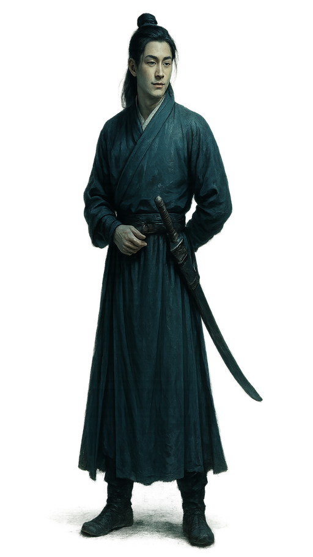 descriptionJade-fair oval face, clear bright eyes, straight brows, youthful yet world-weary, lazy smile. Straight-backed youthful swordsman in a deep green long robe with subtle woven patterns and a narrow belt, black hair neatly gathered, curved saber sheathed at the waist, one hand behind his back and one touching the hilt, composed melancholy elegance final promptSemi-realistic Chinese wuxia character digital painting with cool cinematic mood, moonlit cinematic lighting with silver-blue key light and teal-blue shadows, neutral-cool color grading and desaturated palette, steel-gray ambient light with soft cyan rim, detailed fabric textures with believable cloth weight and painterly brushwork, impasto-style sculpted folds and armor/leather rendering, rich deep palette that stays firmly cool in temperature (blue, teal, slate, silver, indigo dominant), clean bright key light on the figure against pure white background, realistic adult human proportions and anatomy, elegant full-body figure with tangible physical presence, restrained composition with generous negative space, transparent background, no background scenery, clean blank backdrop, clean and focused single-character composition CRITICAL REQUIREMENT: The image must be completely free of any text, letters, words, characters, writing systems, calligraphy, seals, stamps, chop marks, red seal marks, watermarks, signatures, inscriptions, or labels of any kind anywhere in the image. The image should contain ONLY the visual subject with no decorative text elements. Subject: Full-body jianghu wuxia character portrait rendered in cool cinematic painterly style — Jade-fair oval face, clear bright eyes, straight brows, youthful yet world-weary, lazy smile. Straight-backed youthful swordsman in a deep green long robe with subtle woven patterns and a narrow belt, black hair neatly gathered, curved saber sheathed at the waist, one hand behind his back and one touching the hilt, composed melancholy elegance. The character stands in a poised, story-driven martial arts pose with tangible weight and grounded footing, full body from head to feet clearly visible. Costume, hairstyle, accessories, and weapons must faithfully follow the character description. Lighting is firmly COOL: moonlit silver-blue key light from above, soft cyan rim light on the silhouette, teal-blue shadow tones, neutral-cool midtones; absolutely no warm light, no sunset glow, no golden hour, no firelight — even on skin and fabric, shadows must fall cool-blue not warm-brown. Painterly brush strokes sculpt fabric folds and armor/leather details with impasto weight; costume colors stay in the cool-to-neutral range (blue, teal, slate, charcoal, silver, indigo, jade, steel) with clean accent hues; skin rendered with cool-neutral undertones (no orange/tan cast). Clean neutral rim light defining silhouette against pure white background. Transparent background, nothing else behind the character, clean blank negative space only. Vertical composition, character centered with elegant negative space. DO NOT include: no chibi, no Q-version, no oversized head, no photorealism portrait photo, no photo reference look, no western fantasy style, no 3D render, no oil painting, no complex background, no multiple characters, no extra arms, no extra fingers, no cropped feet, no distorted anatomy, no yellow, no yellow tint, no yellow cast, no warm cast, no warm color cast, no warm lighting, no warm palette, no golden hour, no golden lighting, no sunset lighting, no sunset palette, no sepia, no sepia tone, no ochre, no amber, no amber light, no firelight, no torch light, no candlelight, no dusk lighting, no campfire glow, no earth-tone dominance, no ochre-dominant palette, no brown-dominant palette, no tan skin cast, no orange skin, no orange tint, no warm skin lighting, no aged paper, no ivory background, no cream background, no paper texture, no rice paper look, no classical Chinese painting yellowing, no gongbi-on-silk look, no flat shading, no cel-shading, no anime flat look, no muddy dark palette, no dim gloomy lighting, no heavy grunge, no torn canvas, no dust haze, no dusty atmosphere |
老黄 · variant 4
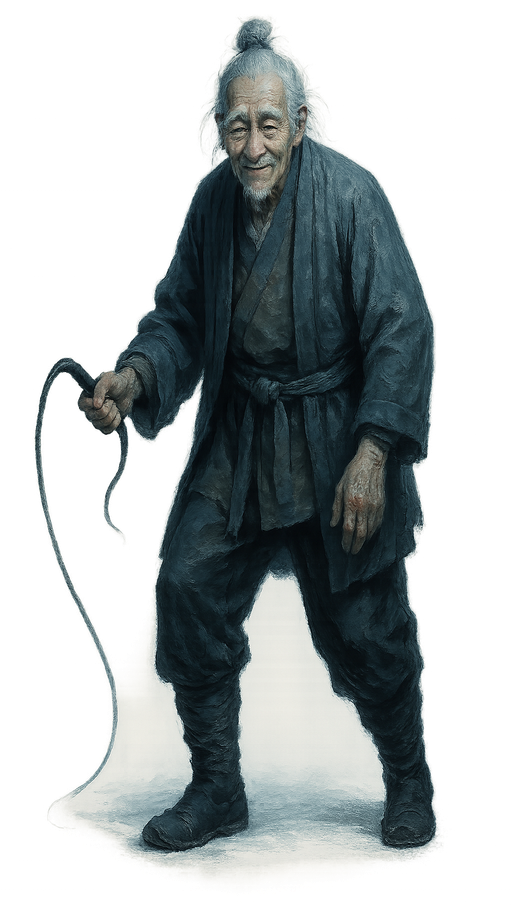 descriptionA deeply lined old face, cloudy eyes, white brows, gentle rustic smile. Crooked elderly figure with sparse white hair, ash-gray short coat over muted ocher inner shirt and dark leggings, coarse belt, right hand lifting a plain old horsewhip while limping forward, back slightly bowed, humble servant look hiding steel-like composure final promptSemi-realistic Chinese wuxia character digital painting with cool cinematic mood, moonlit cinematic lighting with silver-blue key light and teal-blue shadows, neutral-cool color grading and desaturated palette, steel-gray ambient light with soft cyan rim, detailed fabric textures with believable cloth weight and painterly brushwork, impasto-style sculpted folds and armor/leather rendering, rich deep palette that stays firmly cool in temperature (blue, teal, slate, silver, indigo dominant), clean bright key light on the figure against pure white background, realistic adult human proportions and anatomy, elegant full-body figure with tangible physical presence, restrained composition with generous negative space, transparent background, no background scenery, clean blank backdrop, clean and focused single-character composition CRITICAL REQUIREMENT: The image must be completely free of any text, letters, words, characters, writing systems, calligraphy, seals, stamps, chop marks, red seal marks, watermarks, signatures, inscriptions, or labels of any kind anywhere in the image. The image should contain ONLY the visual subject with no decorative text elements. Subject: Full-body jianghu wuxia character portrait rendered in cool cinematic painterly style — A deeply lined old face, cloudy eyes, white brows, gentle rustic smile. Crooked elderly figure with sparse white hair, ash-gray short coat over muted ocher inner shirt and dark leggings, coarse belt, right hand lifting a plain old horsewhip while limping forward, back slightly bowed, humble servant look hiding steel-like composure. The character stands in a poised, story-driven martial arts pose with tangible weight and grounded footing, full body from head to feet clearly visible. Costume, hairstyle, and accessories must faithfully follow the character description. Lighting is firmly COOL: moonlit silver-blue key light from above, soft cyan rim light on the silhouette, teal-blue shadow tones, neutral-cool midtones; absolutely no warm light, no sunset glow, no golden hour, no firelight — even on skin and fabric, shadows must fall cool-blue not warm-brown. Painterly brush strokes sculpt fabric folds and armor/leather details with impasto weight; costume colors stay in the cool-to-neutral range (blue, teal, slate, charcoal, silver, indigo, jade, steel) with clean accent hues; skin rendered with cool-neutral undertones (no orange/tan cast). Clean neutral rim light defining silhouette against pure white background. Transparent background, nothing else behind the character, clean blank negative space only. Vertical composition, character centered with elegant negative space. DO NOT include: no chibi, no Q-version, no oversized head, no photorealism portrait photo, no photo reference look, no western fantasy style, no 3D render, no oil painting, no complex background, no multiple characters, no extra arms, no extra fingers, no cropped feet, no distorted anatomy, no yellow, no yellow tint, no yellow cast, no warm cast, no warm color cast, no warm lighting, no warm palette, no golden hour, no golden lighting, no sunset lighting, no sunset palette, no sepia, no sepia tone, no ochre, no amber, no amber light, no firelight, no torch light, no candlelight, no dusk lighting, no campfire glow, no earth-tone dominance, no ochre-dominant palette, no brown-dominant palette, no tan skin cast, no orange skin, no orange tint, no warm skin lighting, no aged paper, no ivory background, no cream background, no paper texture, no rice paper look, no classical Chinese painting yellowing, no gongbi-on-silk look, no flat shading, no cel-shading, no anime flat look, no muddy dark palette, no dim gloomy lighting, no heavy grunge, no torn canvas, no dust haze, no dusty atmosphere |
温华 · variant 4
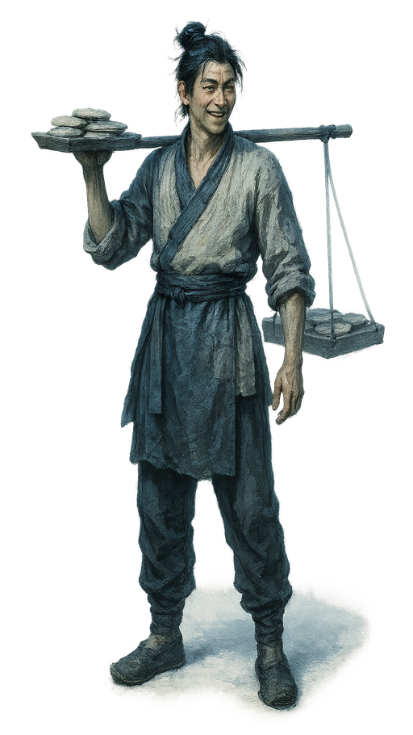 descriptionLean youthful face, slightly prominent cheekbones, bright stubborn eyes, grinning with sly pride. Spare youth in an off-white patched vendor's tunic and muted blue apron over plain trousers, messy tied hair and clean rough cuffs, one arm balancing a pole of flat cakes while the other hangs easy, worldly commoner with leftover swordsman arrogance final promptSemi-realistic Chinese wuxia character digital painting with cool cinematic mood, moonlit cinematic lighting with silver-blue key light and teal-blue shadows, neutral-cool color grading and desaturated palette, steel-gray ambient light with soft cyan rim, detailed fabric textures with believable cloth weight and painterly brushwork, impasto-style sculpted folds and armor/leather rendering, rich deep palette that stays firmly cool in temperature (blue, teal, slate, silver, indigo dominant), clean bright key light on the figure against pure white background, realistic adult human proportions and anatomy, elegant full-body figure with tangible physical presence, restrained composition with generous negative space, transparent background, no background scenery, clean blank backdrop, clean and focused single-character composition CRITICAL REQUIREMENT: The image must be completely free of any text, letters, words, characters, writing systems, calligraphy, seals, stamps, chop marks, red seal marks, watermarks, signatures, inscriptions, or labels of any kind anywhere in the image. The image should contain ONLY the visual subject with no decorative text elements. Subject: Full-body jianghu wuxia character portrait rendered in cool cinematic painterly style — Lean youthful face, slightly prominent cheekbones, bright stubborn eyes, grinning with sly pride. Spare youth in an off-white patched vendor's tunic and muted blue apron over plain trousers, messy tied hair and clean rough cuffs, one arm balancing a pole of flat cakes while the other hangs easy, worldly commoner with leftover swordsman arrogance. The character stands in a poised, story-driven martial arts pose with tangible weight and grounded footing, full body from head to feet clearly visible. Costume, hairstyle, and accessories must faithfully follow the character description. Lighting is firmly COOL: moonlit silver-blue key light from above, soft cyan rim light on the silhouette, teal-blue shadow tones, neutral-cool midtones; absolutely no warm light, no sunset glow, no golden hour, no firelight — even on skin and fabric, shadows must fall cool-blue not warm-brown. Painterly brush strokes sculpt fabric folds and armor/leather details with impasto weight; costume colors stay in the cool-to-neutral range (blue, teal, slate, charcoal, silver, indigo, jade, steel) with clean accent hues; skin rendered with cool-neutral undertones (no orange/tan cast). Clean neutral rim light defining silhouette against pure white background. Transparent background, nothing else behind the character, clean blank negative space only. Vertical composition, character centered with elegant negative space. DO NOT include: no chibi, no Q-version, no oversized head, no photorealism portrait photo, no photo reference look, no western fantasy style, no 3D render, no oil painting, no complex background, no multiple characters, no extra arms, no extra fingers, no cropped feet, no distorted anatomy, no yellow, no yellow tint, no yellow cast, no warm cast, no warm color cast, no warm lighting, no warm palette, no golden hour, no golden lighting, no sunset lighting, no sunset palette, no sepia, no sepia tone, no ochre, no amber, no amber light, no firelight, no torch light, no candlelight, no dusk lighting, no campfire glow, no earth-tone dominance, no ochre-dominant palette, no brown-dominant palette, no tan skin cast, no orange skin, no orange tint, no warm skin lighting, no aged paper, no ivory background, no cream background, no paper texture, no rice paper look, no classical Chinese painting yellowing, no gongbi-on-silk look, no flat shading, no cel-shading, no anime flat look, no muddy dark palette, no dim gloomy lighting, no heavy grunge, no torn canvas, no dust haze, no dusty atmosphere |
姜泥 · variant 4
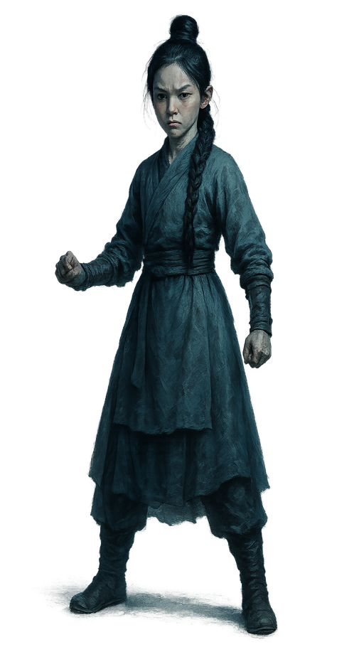 descriptionSmall oval face, slightly upturned eyes, youthful features, guarded and stubborn expression. Delicate wiry body, long dark braid draped across the chest, clean coarse dress in washed muted green with simple apron, mid-stride with sleeves slightly gathered, lips pressed tight, dirt on her fingers, bitter self-contained girlhood final promptSemi-realistic Chinese wuxia character digital painting with cool cinematic mood, moonlit cinematic lighting with silver-blue key light and teal-blue shadows, neutral-cool color grading and desaturated palette, steel-gray ambient light with soft cyan rim, detailed fabric textures with believable cloth weight and painterly brushwork, impasto-style sculpted folds and armor/leather rendering, rich deep palette that stays firmly cool in temperature (blue, teal, slate, silver, indigo dominant), clean bright key light on the figure against pure white background, realistic adult human proportions and anatomy, elegant full-body figure with tangible physical presence, restrained composition with generous negative space, transparent background, no background scenery, clean blank backdrop, clean and focused single-character composition CRITICAL REQUIREMENT: The image must be completely free of any text, letters, words, characters, writing systems, calligraphy, seals, stamps, chop marks, red seal marks, watermarks, signatures, inscriptions, or labels of any kind anywhere in the image. The image should contain ONLY the visual subject with no decorative text elements. Subject: Full-body jianghu wuxia character portrait rendered in cool cinematic painterly style — Small oval face, slightly upturned eyes, youthful features, guarded and stubborn expression. Delicate wiry body, long dark braid draped across the chest, clean coarse dress in washed muted green with simple apron, mid-stride with sleeves slightly gathered, lips pressed tight, dirt on her fingers, bitter self-contained girlhood. The character stands in a poised, story-driven martial arts pose with tangible weight and grounded footing, full body from head to feet clearly visible. Costume, hairstyle, and accessories must faithfully follow the character description. Lighting is firmly COOL: moonlit silver-blue key light from above, soft cyan rim light on the silhouette, teal-blue shadow tones, neutral-cool midtones; absolutely no warm light, no sunset glow, no golden hour, no firelight — even on skin and fabric, shadows must fall cool-blue not warm-brown. Painterly brush strokes sculpt fabric folds and armor/leather details with impasto weight; costume colors stay in the cool-to-neutral range (blue, teal, slate, charcoal, silver, indigo, jade, steel) with clean accent hues; skin rendered with cool-neutral undertones (no orange/tan cast). Clean neutral rim light defining silhouette against pure white background. Transparent background, nothing else behind the character, clean blank negative space only. Vertical composition, character centered with elegant negative space. DO NOT include: no chibi, no Q-version, no oversized head, no photorealism portrait photo, no photo reference look, no western fantasy style, no 3D render, no oil painting, no complex background, no multiple characters, no extra arms, no extra fingers, no cropped feet, no distorted anatomy, no yellow, no yellow tint, no yellow cast, no warm cast, no warm color cast, no warm lighting, no warm palette, no golden hour, no golden lighting, no sunset lighting, no sunset palette, no sepia, no sepia tone, no ochre, no amber, no amber light, no firelight, no torch light, no candlelight, no dusk lighting, no campfire glow, no earth-tone dominance, no ochre-dominant palette, no brown-dominant palette, no tan skin cast, no orange skin, no orange tint, no warm skin lighting, no aged paper, no ivory background, no cream background, no paper texture, no rice paper look, no classical Chinese painting yellowing, no gongbi-on-silk look, no flat shading, no cel-shading, no anime flat look, no muddy dark palette, no dim gloomy lighting, no heavy grunge, no torn canvas, no dust haze, no dusty atmosphere |
李淳罡 · variant 4
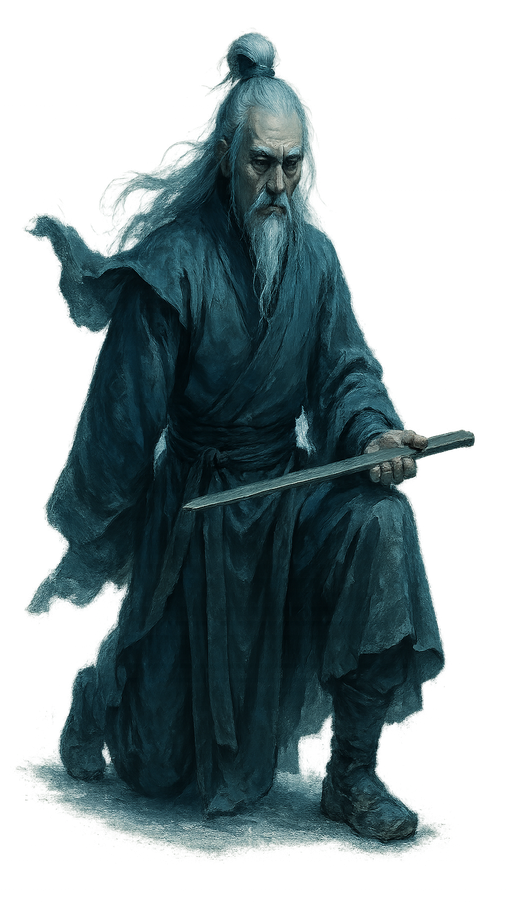 descriptionLean gaunt face, pronounced cheekbones, deep-set eyes, elderly and sternly restrained. wiry one-armed elder kneeling on one leg in a faded slate robe with broad sleeves and worn cloth shoes, white hair and beard flowing free, plain wooden sword laid across his left palm, empty sleeve cast back, quiet lethal composure, cold gray-blue palette final promptSemi-realistic Chinese wuxia character digital painting with cool cinematic mood, moonlit cinematic lighting with silver-blue key light and teal-blue shadows, neutral-cool color grading and desaturated palette, steel-gray ambient light with soft cyan rim, detailed fabric textures with believable cloth weight and painterly brushwork, impasto-style sculpted folds and armor/leather rendering, rich deep palette that stays firmly cool in temperature (blue, teal, slate, silver, indigo dominant), clean bright key light on the figure against pure white background, realistic adult human proportions and anatomy, elegant full-body figure with tangible physical presence, restrained composition with generous negative space, transparent background, no background scenery, clean blank backdrop, clean and focused single-character composition CRITICAL REQUIREMENT: The image must be completely free of any text, letters, words, characters, writing systems, calligraphy, seals, stamps, chop marks, red seal marks, watermarks, signatures, inscriptions, or labels of any kind anywhere in the image. The image should contain ONLY the visual subject with no decorative text elements. Subject: Full-body jianghu wuxia character portrait rendered in cool cinematic painterly style — Lean gaunt face, pronounced cheekbones, deep-set eyes, elderly and sternly restrained. wiry one-armed elder kneeling on one leg in a faded slate robe with broad sleeves and worn cloth shoes, white hair and beard flowing free, plain wooden sword laid across his left palm, empty sleeve cast back, quiet lethal composure, cold gray-blue palette. The character stands in a poised, story-driven martial arts pose with tangible weight and grounded footing, full body from head to feet clearly visible. Costume, hairstyle, accessories, and weapons must faithfully follow the character description. Lighting is firmly COOL: moonlit silver-blue key light from above, soft cyan rim light on the silhouette, teal-blue shadow tones, neutral-cool midtones; absolutely no warm light, no sunset glow, no golden hour, no firelight — even on skin and fabric, shadows must fall cool-blue not warm-brown. Painterly brush strokes sculpt fabric folds and armor/leather details with impasto weight; costume colors stay in the cool-to-neutral range (blue, teal, slate, charcoal, silver, indigo, jade, steel) with clean accent hues; skin rendered with cool-neutral undertones (no orange/tan cast). Clean neutral rim light defining silhouette against pure white background. Transparent background, nothing else behind the character, clean blank negative space only. Vertical composition, character centered with elegant negative space. DO NOT include: no chibi, no Q-version, no oversized head, no photorealism portrait photo, no photo reference look, no western fantasy style, no 3D render, no oil painting, no complex background, no multiple characters, no extra arms, no extra fingers, no cropped feet, no distorted anatomy, no yellow, no yellow tint, no yellow cast, no warm cast, no warm color cast, no warm lighting, no warm palette, no golden hour, no golden lighting, no sunset lighting, no sunset palette, no sepia, no sepia tone, no ochre, no amber, no amber light, no firelight, no torch light, no candlelight, no dusk lighting, no campfire glow, no earth-tone dominance, no ochre-dominant palette, no brown-dominant palette, no tan skin cast, no orange skin, no orange tint, no warm skin lighting, no aged paper, no ivory background, no cream background, no paper texture, no rice paper look, no classical Chinese painting yellowing, no gongbi-on-silk look, no flat shading, no cel-shading, no anime flat look, no muddy dark palette, no dim gloomy lighting, no heavy grunge, no torn canvas, no dust haze, no dusty atmosphere |